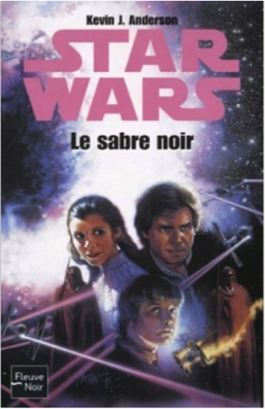
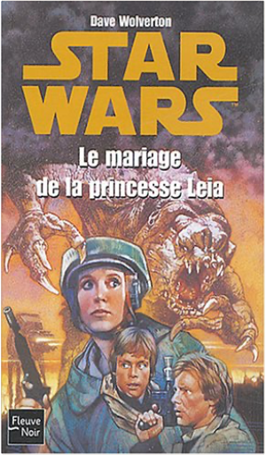

Books
Movies
Albums
Videogames
Games
BD
BD Camille
Blu-ray
Business
Camille
Comics
Cooking
Lego
Manga
Pauline
Photography
Sport
Star Wars
T'choupi
Travel
TV Shows
Un livre dont vous êtes le héro
Vinyl
Walt Disney
1
2
3
4
5
star wars, tome 17 : l'académie jedi, partie 2, sombre disciple
kevin james anderson
star wars, tome 18 : l'académie jedi, partie 3, les champions de la force
kevin james anderson
star wars, tome 22 : épisode I, la menace fantôme
terry brooks
5
star wars, tome 23 : les enfants du jedi
barbara hambly
3

star wars, tome 24 : le sabre noir
kevin j. anderson

star wars, tome 25 : le mariage de la princesse leia
dave wolverton
3
star wars, tome 27- la nouvelle rébellion
kristine kathryn rusch
star wars, tome 28 : les x-wings, partie 5, l'escadron spectre
aaron allston
5
star wars, tome 30 : les x-wings, partie 6, le poing d'acier
aaron allston
star wars, tome 31 : la trilogie yan solo, partie 1, le coup du paradis
a.c. crispin
star wars, tome 32 : la trilogie yan solo, partie 2, le gambit du hutt
a.c. crispin
star wars, tome 33 : la main de thrawn, partie 1, le spectre du passé
timothy zahn
1
1
2
3
4
5


 Made with Delicious Library Made with Delicious Library
Made with Delicious Library Made with Delicious Library